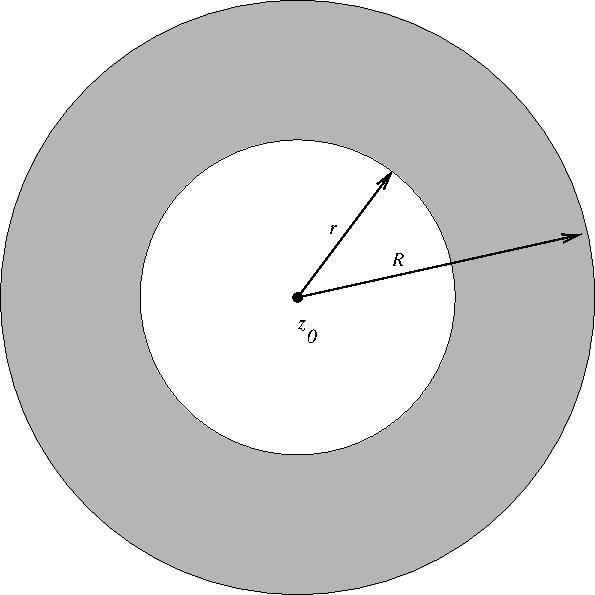

which converges absolutely in this disk. We now consider
the case of function analytic in an annulus which
is the set between two concentric circles:
\[
A(z_0,r,R) = \{ z : r\lt |z-z_0|\lt R\}.
\]

As we outlined in class on Friday such a function has an expansion
\[
f(z)= \sum_{n=-\infty}^\infty c_n (z-z_0)^n
\]
which is convergent in the annulus. The difference between
this and the regular power series is that \(n\) is allowed to have
negative values.
We prove this under the
slightly stronger condition that \(f(z)\) is analytic in
the slightly larger region defined by \( r\le |z-z_0|\le R\).
Then for \(z \in A(z_0,r,R)\) the Cauchy Integral Formula
gives that
\[
f(z) = \frac1{2\pi i} \int_{\partial A(z_0,r,R)} \frac{f(w)}{w-z}\,dw
\]
Problem 1:
Explain why this implies for \(z\in A(z_0,r,R)\) that
\[
f(z) = \frac1{2\pi i} \int_{|w-z_0|=R} \frac{f(w)}{w-z}\,dw
- \frac1{2\pi i} \int_{|w-z_0|=r} \frac{f(w)}{w-z}\,dw.
\]
Solution:
Now on the integral over \(|w-z_0| = R\) and for \( z \in A(z_0,r,R) \)
we have \( |z-z_0| \lt R =|w-z_0| \). Therefore the number
\[
\left | \frac{z-z_0}{w-z_0}\right|\lt 1
\]
Use this to show that \( \dfrac1{w-z}\) can be expanded in
a convergent series in powers of \((z-z_0)\) for \(z\in A(z_0,r,R)\)
and \(|w-z_0| =R\).
Problem 2:
Now use this to show that \[\frac1{2\pi i} \int_{|w-z_0|=R} \frac{f(w)}{w-z}\,dw\]
can be expanded in a convergent series in powers of \( (z-z_0)\).
Solution:
We now play the same game with the integral
\[\frac1{2\pi i} \int_{|w-z_0|=r} \frac{f(w)}{w-z}\,dw\]
In this case if \(z\in A(z_0,r,R)\) and \(|w-z_0|=r\)
we have that the fraction
\[
\left| \frac{w-z_0}{z-z_0} \right| \lt 1
\]
so this time we try to expand in powers of the reciprocal
\( \dfrac1{z-z_0}\) .
Problem 3:
As a first step you should show that when
\(|w-z_0|=r\) and \( z\in A(z_0,r,R)\) that \(\dfrac 1{w-z_0}\)
can be expanded as a convergent series in powers of
\( \dfrac1{(z-z_0)} \).
Solution:
Problem 4:
Looking back at Problem 1, we see that one of the terms
in our formula for $f(z)$ is
\[
- \frac1{2\pi i} \int_{|w-z_0|=r} \frac{f(w)}{w-z}\,dw.
\]
Show that this can be expanded in a convergent series
in powers of \( \dfrac1{(z-z_0)} \).
Solution:
Putting together what we have done so far we have
for \( z \in A(z_0,r,R) \)
\begin{array}{rl}f(z)&= \displaystyle
\frac1{2\pi i} \int_{|w-z_0|=R} \frac{f(w)}{w-z}\,dw
- \frac1{2\pi i} \int_{|w-z_0|=r} \frac{f(w)}{w-z}\,dw\\
&= \displaystyle \sum_{n=0}^\infty c_n (z-z_0)^n +
\sum_{n=0}^\infty a_{n+1} (z-z_0)^{n+1}
\end{array}
In this second sum as the terms are \(a_{n+1}(z-z_0)^{n+1}= a_{n+1}(z-z_0)^{-(n+1)}\)
and \( n \) goes from \(0\) to \(\infty\). Therefore the exponent
\( -(n+1) \) goes from \( -1\) to \( - \infty\). So if we set
\(c_n = a_{-n}\) we and rewrite the second sum as
\[
\sum_{n=0}^\infty a_{n+1} (z-z_0)^{n+1}= \sum_{n=-\infty}^{-1} c_n (z-z_0)^{n}.
\]
Therefore we can combine these two sums into a single sum:
\[
f(z) = \sum_{n=-\infty}^\infty c_n (z-z_0)^n.
\]
We summarize this as a theorem.
Theorem on Laurent Series Expansion: Let
\(f(z)\) be analytic in an annulus \( A(z_0,r,R) \) .
Then \(f(x)\) has a convergent series expansion
\[
f(z) = \sum_{n=-\infty}^\infty c_n (z-z_0)^n
\]
in this annulus.
With just a little more care then what we have done here it
this can be extend to the cases where \(r=0\) (which will shortly
be important to us) and \(R=\infty\).
It would be nice to have a formula for the coefficients \(c_n\)
in the Laurent expansion. By being careful in the proof we gave
for the existence of the expansion we could have kept track of
what they are. But it is easier to just derive a what they are
directly form the series and the following fact.
Let \(m\) be an integer (positive, negative, or zero). Then
\[
\int_{|z-z_0|=r} (z-z_0)^{m} \,dz = \begin{cases} 0,& m\ne -1;\\ 2\pi i,& m=-1.
\end{cases}
\]
We have done this calculation enough times that I am not going
to repeat it here. Use this to do the following:
Problem 5:
Let \(f(z)\) have the Laurent expansion
\[
f(z) = \sum_{n=-\infty}^\infty c_n (z-z_0)^n
\]
in the annulus \(A(z_0,r,R)\) and let \(r\lt \rho \lt R\). Then
\[
c_n = \frac{1}{2\pi i} \int_{|z-z_0|=\rho} \frac{f(z)}{(z-z_0)^{n+1}} \,dz.
\]
Solution: